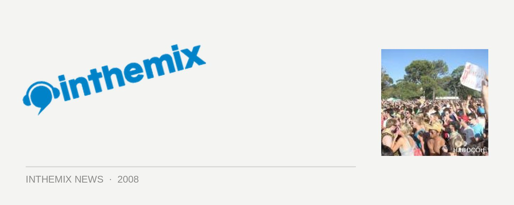

Future Music Festival rocks Adelaide - photos live on ITM
With the other states across Australia already wrapped up, on Monday it was Adelaide’s turn to experience the Future Music Festival. With headline performances form some of the biggest names in dance including The Chemical Brothers, Markus Schulz, Roger Sanchez, John Digweed and Sven Vath, it was an event that was eagerly awaited by Adelaide’s dance community. Check out the photos here on ITM, and keep your eyes peeled as the review will follow shortly.
Check out the Adelaide photos.
Stay tuned to ITM as the national coverage keeps flowing in, and click here to check out ITM’s festival page for a whole heap of other FMF content.